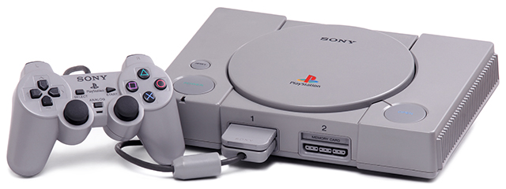
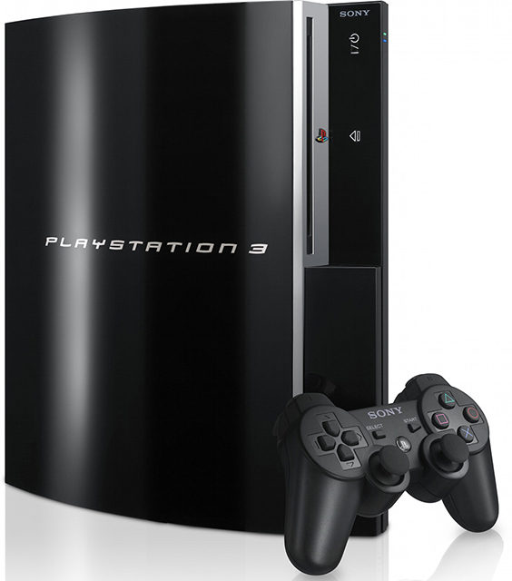
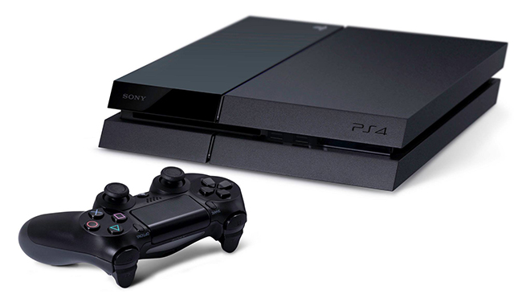

Консоли Playstation
Playstation
- 1
- One
Первая PlayStation поступила в продажу 3 декабря 1994 года в Японии, в США 9 сентября 1995 года и 29 сентября 1995 года в Европе. К началу мировых продаж уже было доступно приличное количество игр, в том числе от самой Sony и Namco. Были доступны Battle Arena Toshinden, Doom, Twisted Metal, Wipeout, Ridge Racer и так далее. В качестве носителей использовались CD, а для сохранения использовались карты памяти, теперь не нужно было записывать на бумажку код на определенных чекпоинтах чтобы потом начать с нужного места. Карты памяти использовались и в PS2. Цена составляла $299 долларов. Консоль довольно быстро набирала популярность. Всего за 11 лет производства было продано более 100 млн консолей, в период с 1998 по 2006 годы была самой продаваемой в мире. Среди дополнительных функций было воспроизведение аудиодисков и VideoCD (в некоторых вариантах). Было выпущено немало вариантов консоли: в зависимости от региона, с разной компоновкой внутренностей и прочими мелкими отличиями. В 2000 году вышло более кардинальное обновление: PSone, которая была существенно компактнее и легче (Sony практикует подобные решения и по сей день).
Playstation 2
- PS2
- PS2 Slim
В 1999 году Sony объявила о разработке PlayStation 2 (PS2), продажи в Японии началась 4 марта 2000 г, остальной мир увидел приставку осенью того же года. Она стала самой быстро продаваемой и самой популярной игровой консолью в истории. На третий квартал 2011 года в мире было продано почти 155 миллионов экземпляров, а самой продаваемой консоль стала в 2006 году. PS2 уже поддерживала CD и DVD и была обратно совместима с играми PlayStation (за редким исключением). К этому времени появились конкуренты Microsoft Xbox и Nintendo GameCube.
Playstation 3
- PS3
- PS3 Slim
- PS3 Super Slim
Sony PlayStation 3, PS3 — третья стационарная приставка Sony, конкурентами стали Xbox 360 от Microsoft и Wii. Разработка консоли несколько затянулась и вместо запланированного 2005 года PS3 поступила в продажу в конце 2006 года в Японии, а мировые продажи начались в 2007. Консоль уже умела многое: помимо игр можно было слушать музыку, смотреть фильмы и бродить по просторам интернета. Был запущен онлайн-магазин PlayStation Store. В качестве носителей используются диски Blu-Ray, есть встроенный HDD (или флеш-память).
Playstation 4
- PS4
- PS4 Slim
- PS4 Pro
Sony PlayStation 4, PS4 — последняя и самая новая на данный момент стационарная игровая приставка Sony. Официальный анонс PlayStation 4 состоялся на конференции PlayStation Meeting 2013 20 февраля 2013 года, продажи начались в ноябре 2013 года. Консоль работает под управлением операционной системы Orbis, являющейся модифицированной версией FreeBSD 9.0. Учитывая излишнюю специфичность предыдущих платформ и, как следствие, усложненную разработку игр, Sony (как и конкурент Microsoft Xbox One) решили использовать более близкое к компьютерному и более универсальное "железо". Используется 8-ядерный центральный процессор AMD Jaguar/Kabini x86-64 и 8 Гб GDDR5. Такие изменения повлекли последствия в виде несовместимости со старыми играми: они доступны только в "облачном" режиме. Внутри установлен жёсткий диск объёмом 500 Гб (возможна замена, в том числе и на SSD), 6-скоростной Blu-Ray и 8-скоростной DVD привод, порты USB 3.0, Ethernet, HDMI и оптический. Плюс беспроводные модули Wi-Fi и Bluetooth 2.1.